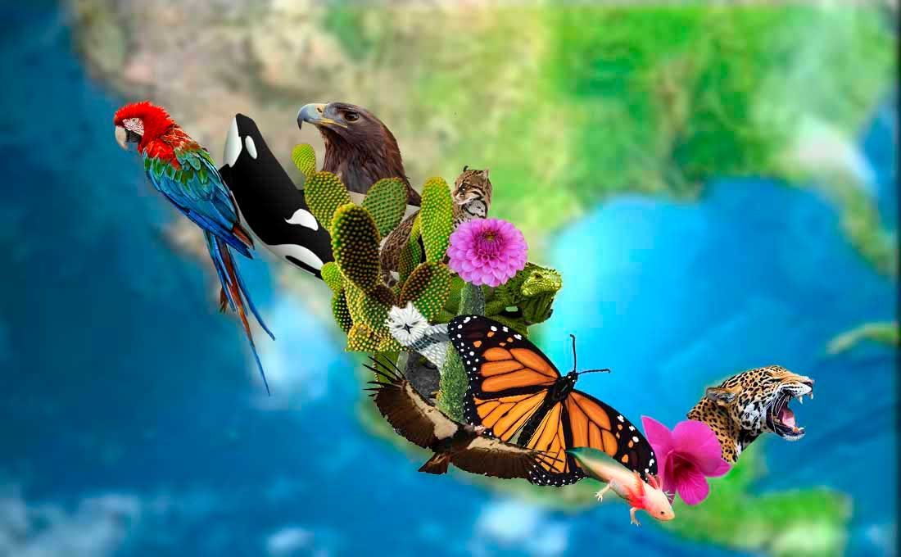

Mexico Megadiverso

La biodiversidad nacional es un gran orgullo que compartimos todas y todos los mexicanos. Nuestro pais ocupa el quinto lugar en variedad de plantas y anfibios, el tercero en mamíferos y el segundo en reptiles de todo planeta.
Dentro del grupo de los 17 “países megadiversos”, México se ubica en el lugar número 5, después de Brasil, Colombia, China e Indonesia. Estos países abarcan el 10% de la superficie terrestre y alojan al 70% de la biodiversidad planetaria, de la cual nuestro país alberga, según estimaciones, alrededor del 12%.
 Entre las circunstancias que propiciaron esta riqueza natural podemos enumerar las siguientes:
Entre las circunstancias que propiciaron esta riqueza natural podemos enumerar las siguientes:
- -México es uno de los tres países dentro de esta lista con litorales tanto en el Atlántico como en el Pacífico, junto con Estados Unidos y Colombia-
- -Su afortunada posición geográfica, por donde atraviesa el trópico de Cáncer, ubica a nuestro país dentro de la zona tropical de la Tierra, en donde se desarrolla la mayor diversidad de especies.-
- -A lo largo de las costas mexicanas pueden encontrarse variedad de ecosistemas como manglares, estuarios, lagunas costeras y arrecifes coralinos. Además, por la separación entre las islas y el continente, se ha dado el aislamiento, circunstancia que ha generado el desarrollo de flora y fauna únicas, endémicas-.
- -También la topografía mexicana, que posee tanto montañas como áreas planas, desérticas y boscosas, es factor determinante en la proliferación de gran variedad de especies producto de sus variadas altitudes, rodeadas de mares y de heterogéneos ambientes, suelos y climas-.
De esta manera, nuestro México es orgullosamente megadiverso y debemos protegerlo.